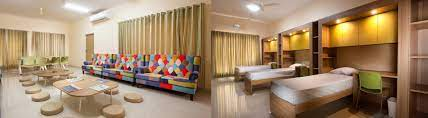

JAIN INTERNATIONAL RESIDENTIAL SCHOOL a completely residential school situated in Karnataka.One of the best residential school in India. Completely Co-ED school consisting of CBSE and IB-dp boards. Variety of Sports facilities are provided. It provides education from class 6 to the 12. Best teacher facility is provided. "HOME AWAY FROM HOME".
